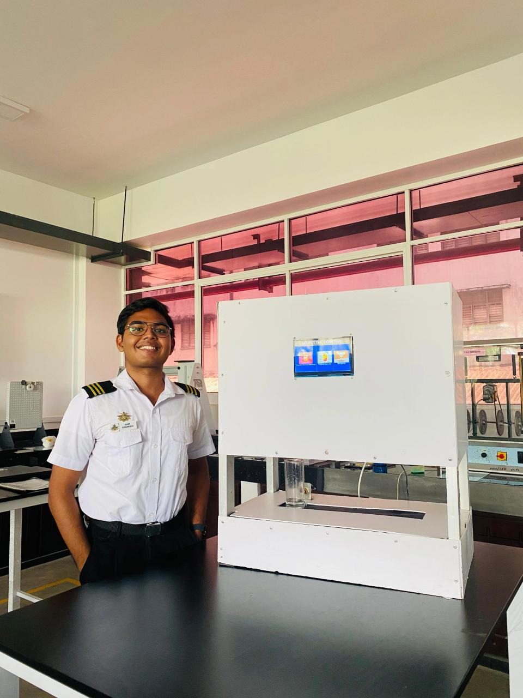

Automated Cocktail Machine
A fully automated cocktail dispensing system combining mechanical precision, fluid dynamics, stepper motor control, and a touchscreen interface to deliver customised drink recipes at the touch of a screen.


Project Overview
This innovative project showcases the integration of mechanical systems, fluid dynamics, touchscreen UI, and embedded programming. The automated cocktail machine demonstrates advanced skills in automation, user interface design, and real-time control using Raspberry Pi 4 technology.
This precision fluid dispensing system brings engineering to the art of mixology — combining fluid dynamics, motor control, and intuitive user interface design to create consistently perfect cocktails at the touch of a button. The system eliminates human error in measurements while providing an engaging, interactive experience.
Technologies Used
Key Components & Features
Raspberry Pi 4
Main controller handling user input, recipe logic, and motor control through GPIO pins with real-time multi-threaded processing capabilities managing all subsystems simultaneously.
NEMA 17 Stepper + Conveyor Belt
Automates conveyor belt movement enabling accurate glass alignment under dispensing nozzles for multi-ingredient cocktail preparation.
Centrifugal Pumps
Precisely dispense liquids for each ingredient with ±2ml accuracy, ensuring consistent mixing with variable speed control for different liquid viscosities.
Pneumatic Y-Shape Air Fittings
Efficient liquid routing combining multiple fluid lines in a compact, organised setup with minimal pressure loss and easy maintenance access.
7-Inch Touch Display
Intuitive GUI for selecting from cocktail recipes and initiating the automated dispensing process with a visual menu and real-time progress feedback.
Proximity Sensors
Ensures precise glass detection and positioning, preventing spillage and ensuring accurate ingredient delivery before the dispensing sequence begins.
Key Metrics
Technical Implementation
Control System
The Raspberry Pi 4 runs a Python-based control system managing all aspects of the cocktail dispensing process, from user interface interactions to precise motor control and pump timing with a multi-threaded architecture handling simultaneous processes.
Automation Process
When a user selects a cocktail recipe on the touchscreen, if a glass is detected by proximity sensors, the system automatically activates the appropriate pumps in sequence to dispense the correct ingredients in precise measurements. Calibration routines measure actual flow rates for each pump-tube combination.
Fluid Delivery System
Peristaltic pumps ensure precise, contamination-free liquid delivery. Each pump is driven through custom driver circuits allowing precise flow rate adjustment with real-time monitoring tracking pump rotations for accurate volumetric dispensing.
Safety Features
The system includes proximity sensors for glass detection, emergency stop functionality, overflow detection, and pump timeout protection to ensure safe operation. All states are managed through a robust finite state machine.
Project Outcomes
- Mechanical Engineering: Precise conveyor belt system, fluid routing, and chassis design for both functionality and aesthetics
- Electrical Engineering: Motor control, sensor integration, power management, and GPIO programming
- Software Engineering: Real-time control system with recipe management using SQLite database and multithreaded Python application
- Automation: Fully automated process from user input to final product delivery with consistent quality
- Precision Engineering: ±2ml dispensing accuracy through calibrated pump control and flow rate monitoring
The completed system can dispense cocktail recipes with consistent quality and precise ingredient ratios — expandable to 50+ recipes — showcasing advanced skills in mechatronic system design and implementation.